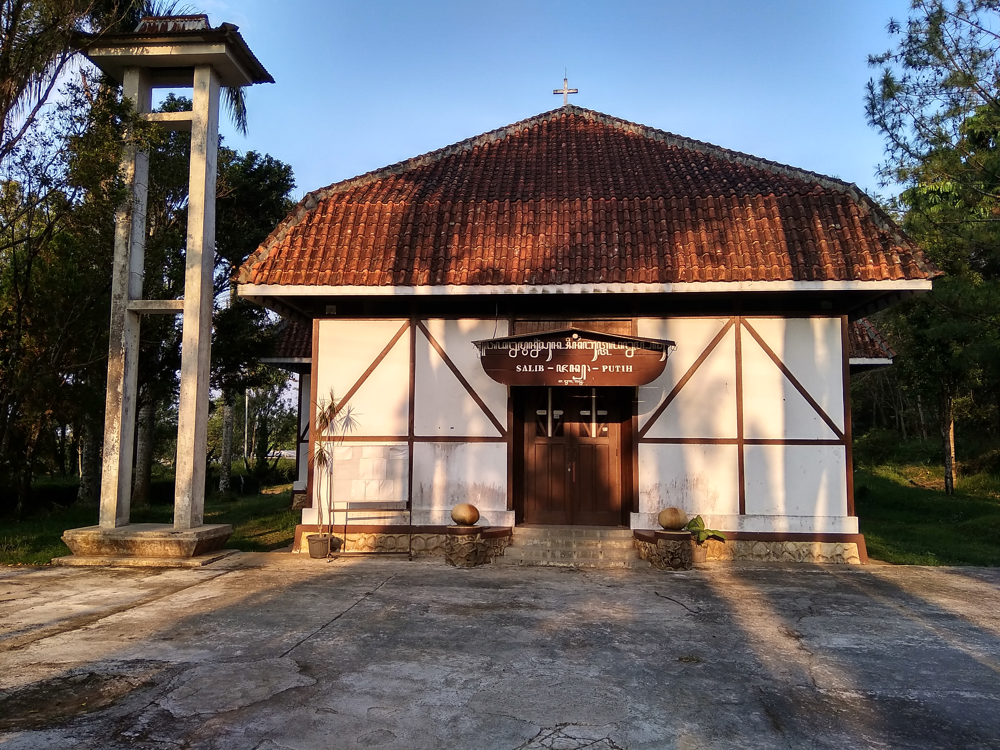
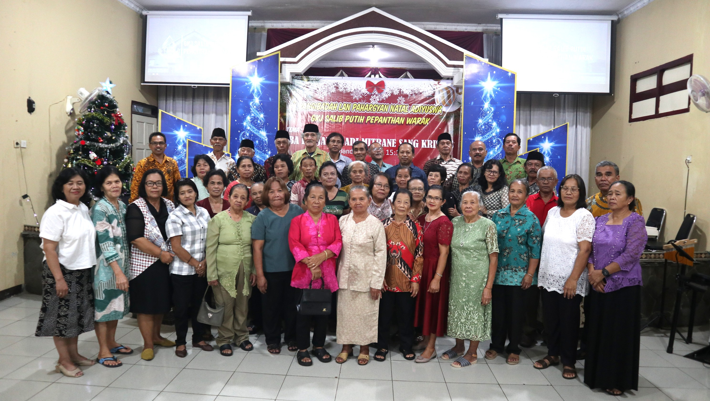
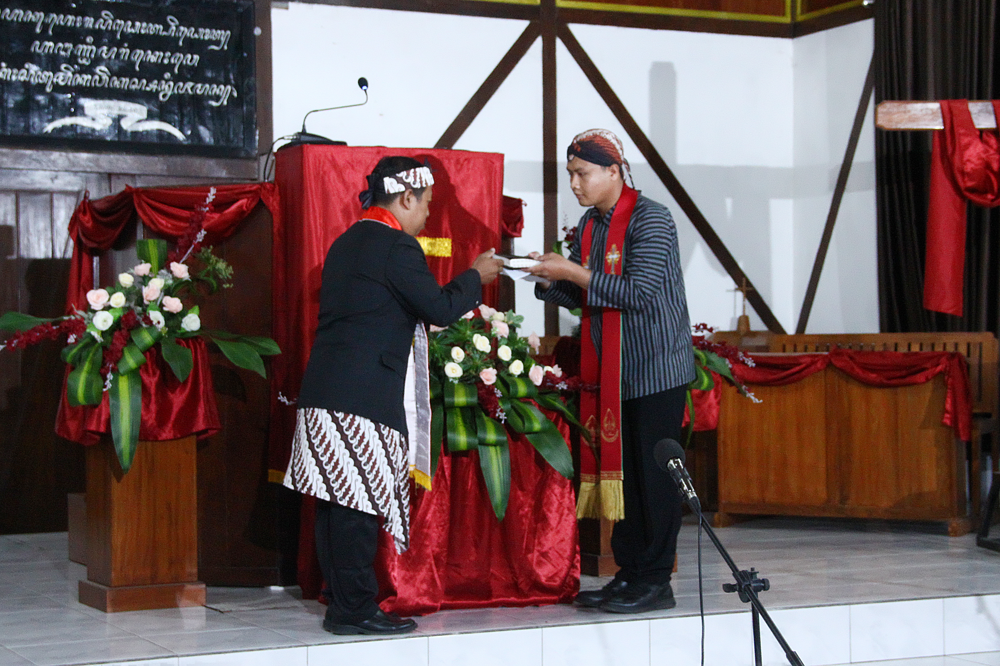

Dashboard
Sistem Informasi Manajemen Jemaat GKJ Salib Putih
Portal resmi Gereja Kristen Jawa (GKJ) Salib Putih untuk informasi jadwal peribadahan, unduhan Warta Jemaat mingguan, pengajuan surat gerejawi, dan transparansi pelayanan warga.


Persekutuan Jemaat
Ibadah MingguanGereja Kristen Jawa (GKJ) Salib Putih merupakan bagian dari persekutuan Sinode GKJ (Klasis Salatiga Bagian Selatan) yang tumbuh di kawasan bersejarah Salib Putih, lereng Gunung Merbabu, Kota Salatiga.
Berakar pada semangat pelayanan sosial-diakonia sejak awal karya pelayanan di Salib Putih, gereja hadir menjadi rumah rohani yang ramah bagi warga jemaat di Gereja Induk, pepanthan, wilayah sekitar, hingga pendampingan di Unit Panti Wredha.
Persekutuan warga jemaat GKJ Salib Putih tersebar di enam wilayah dan pepanthan pelayanan
Pusat peribadahan minggu (07.00 & 09.00 WIB), kelas katekisasi, pembinaan komisi, dan kantor sekretariat majelis gereja.
Persekutuan ibadah minggu pukul 07.00 WIB, persekutuan doa wilayah, dan pendampingan pastoral warga pepanthan.
Pelayanan diakonia warga, persekutuan wilayah Kalibeji, serta ibadah dan pendampingan rohani di Unit Panti Wredha.
Baca langsung atau unduh edisi Warta Jemaat & Tata Ibadah GKJ Salib Putih
Masuk ke Portal Warga untuk mengajukan surat keterangan/pengantar nikah, melihat riwayat berkas, dan memantau laporan keuangan gereja.